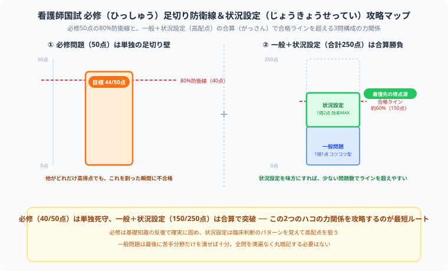

看護師国家試験の勉強法・合格スケジュール【2026年版】
『絶対に一発で看護師免許を掴み取るぞ！』と決意したものの、病院実習のレポートや卒業試験の重さに絶望し、さらに国試のテキストを開いて……「うわっ、なんじゃこりゃ、合計240問もある上に、必修で1問でも足切りラインを下回ったら即不合格ってプレッシャーで頭パンクするわ！」とフリーズしていませんか？（笑）
毎日ヘビーな国家試験の猛勉強と格闘している僕の視点から、この過酷な試練をゲーム感覚でサクッと切り崩し、確実に合格をもぎ取るための【必修・状況設定逆算スケジュール】を優しくナビゲートします！実習で疲れ切った日でも、この記事の通りに動けば迷わず前に進めるように組み立てました。
また、記事の末尾のほうにある【いいねボタン】をポチッと押してもらえると、僕の毎日の勉強と執筆のモチベーションになるので、めちゃくちゃ嬉しいです！それでは、一緒に看護師国試を突破していきましょう！
看護師国家試験の基本情報
| 項目 | 内容 |
|---|---|
| 試験日程 | 毎年2月（日曜日） |
| 試験形式 | マークシート式（午前・午後各120問 計240問） |
| 合格基準 | 必修問題：80%以上（足切り）＋ 一般・状況設定問題：総得点の約60%以上 |
| 合格率 | 88〜92%（例年） |
| 受験資格 | 看護師養成校（専門学校・大学・短大）の卒業見込み者または卒業者 |
| 主催 | 厚生労働省 |
試験の3問構成と配点

必修（ひっしゅう）問題は単独の足切り（あしきり）ライン、一般問題と状況設定（じょうきょうせってい）問題は合算（がっさん）で合格ラインを超える──この力関係を最初に頭に入れておこう。
| 問題種別 | 問題数 | 配点 | 合格基準 | 特徴 |
|---|---|---|---|---|
| 必修問題 | 50問 | 1点/問 | 40点以上（80%）が必須 | 基礎中の基礎。1問でも足切りラインを割ると不合格 |
| 一般問題 | 130問 | 1点/問 | 総得点の約60%以上 | 各看護領域から幅広く出題 |
| 状況設定問題 | 60問（30事例×2問） | 2点/問 | 同上（一般と合算） | 臨床判断力が問われる。配点が高い |
科目別 出題傾向と攻略ポイント
| 看護領域 | 出題数目安 | 攻略ポイント |
|---|---|---|
| 成人看護学 | 最多（約60問） | 疾患の病態・看護介入を結びつけて覚える |
| 老年看護学 | 約20問 | 高齢者特有の変化（嚥下・転倒・認知症）を重点的に |
| 小児看護学 | 約15問 | 発達段階別の特徴・予防接種スケジュールを丸暗記 |
| 母性看護学 | 約15問 | 妊娠週数・分娩期の変化・産褥期ケアの数字を覚える |
| 精神看護学 | 約15問 | 法律（精神保健福祉法）と疾患別の看護が頻出 |
| 基礎看護学 | 約15問 | 滅菌・感染予防・バイタルの基準値を正確に |
| 在宅看護論 | 約10問 | 制度・多職種連携・訪問看護の役割 |
| 地域・公衆衛生看護学 | 約10問 | 保健所・市町村の役割、各種健診の根拠法 |
学年別・国試対策スケジュール
4年生（最終学年）国試本番まで
| 時期 | 学習内容 | 目安時間/日 |
|---|---|---|
| 4〜6月 | 実習と並行しながら必修問題の基礎固め | 1〜2時間 |
| 7〜9月 | 参考書（レビューブック等）1周・各領域の弱点把握 | 3〜4時間 |
| 10〜11月 | 過去問5年分を領域別に解く・模試受験 | 4〜5時間 |
| 12〜1月 | 模試の見直し・苦手領域の集中強化 | 5〜6時間 |
| 試験直前2週間 | 必修問題の総復習・状況設定問題の演習 | 6〜8時間 |
状況設定問題（事例問題）の攻略法
配点が2点/問と高く、合否に直結するのが状況設定問題です。ここは丸暗記だけでは太刀打ちできない、臨床判断力がモノを言う領域。でも裏を返せば、パターンさえ掴めば一気に得点源へ化ける、一番おいしいエリアでもあります。
- 患者の状態を時系列で整理する：「いつ・何が起きた・今どの状態か」をまず把握する
- 優先順位問題のルール：生命に関わることを最優先。ABCDEアプローチ（気道→呼吸→循環→神経→その他）で考える
- 「まず何をすべきか」型は報告を選ぶ：「異常を発見したら医師に報告」が正解になるケースが多い
- 誤り選択肢のパターンを覚える：「患者の意思を無視している」「安全配慮が欠けている」選択肢は大抵✗
効率的な暗記ツール・参考書
| 教材 | 特徴 | 向いている使い方 |
|---|---|---|
| レビューブック（メディックメディア） | 国試範囲を網羅した定番参考書。コンパクト | 7〜9月の通読・書き込み |
| クエスチョン・バンク（QB） | 過去問全収録。解説が詳しい | 10月以降の問題演習 |
| 看護roo!・ナース専科 | スマホで一問一答。隙間時間に最適 | 通学・休憩時間 |
| RB（レビューブック）ノート | 自作まとめノート。書くことで記憶定着 | 苦手科目の整理 |
まとめ
- 必修問題は80%以上（40/50点）が絶対条件。油断しない
- 状況設定問題は2点/問の高配点。優先順位の考え方を身につける
- 7月から本格的に始め、10月以降は過去問演習中心に切り替える
- 苦手領域は模試で早めに発見し、12月までに潰す
- 直前2週間は必修の総仕上げと状況設定の実戦練習に集中する
実習のレポートに追われながら、卒業試験と国試の両方を同時に抱えるのは、正直めちゃくちゃハードなことだと思います。それでも毎日ベッドサイドで患者さんと向き合い、誰かの命を救うプロになるために猛勉強を続けているあなたは、僕から見ても本当にかっこいい仲間です。必修を死守し、状況設定で加点を稼げば、合格は必ず見えてきます。
ここまで読んでくれてありがとうございます！もしこの記事が実習の合間の力になったら、僕の毎日の勉強と執筆のモチベーション維持のために、この下にある【いいねボタン】をポチッと押してもらえると、めちゃくちゃ励みになります。一緒に看護師国試合格まで走り抜きましょう！